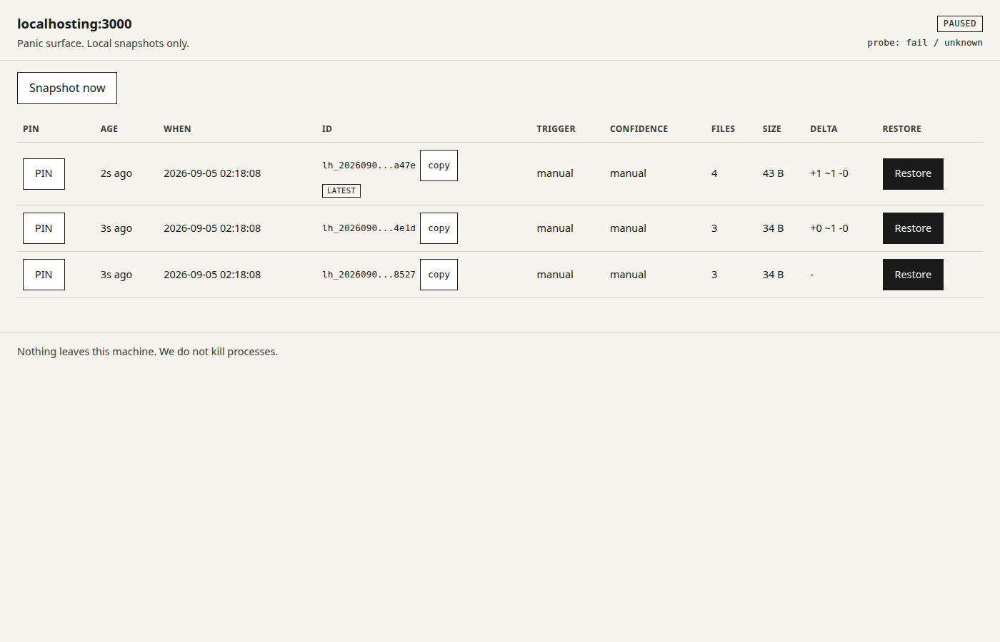

no tests were harmed npm test exists actually
The undo button for localhost. Not for production. Not for git. For the mess your agent just made on :3000.
npx localhosting watch
Free, MIT, local-only. The dashboard is on :3001 because :3000 is already taken by your app.
localhosting watch running.npx localhosting watchnpx localhosting listnpx localhosting restore <id>Requires Node 20+. No account.
